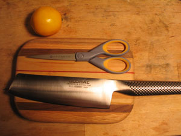
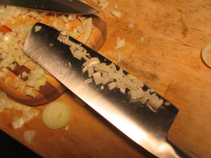

Global vegetable cleaver
At last, courtesy of Nathan, I am the proud owner of my first Global knife, a brand I have been drooling over for months. Here she is, along with some titanium scissors I got for n8 and the Meyer lemon that I’m bringing to Pittsburgh for my mother:

It’s a vegetable cleaver, which is exactly what I needed. We’ve been using the Eversharp series of Henckels since we moved, which aren’t completely awful, but it was a $49 set of knives, so you can’t expect too much from them. The finely serrated edge has a tendency to shred vegetables, especially zucchini. Not so my new cleaver. It met an onion on its maiden voyage, and the onion was cut.

Comments
i just bought chris the 8" global chef knife!! we LOVE it…
We all should have celebrated pre-Christmas together! So fun!
you like the global? it always felt funny in my hand… but yay for you. a knife you love is so insanely key!
Add a comment